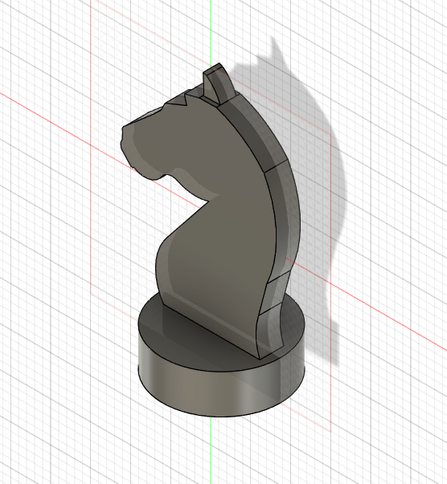

Computer Aided Design
3D Modelling (18 May)
For this lesson, we were taught the different techniques on 3D modelling such as revolution, lofting and sculpting. We were then tasked to design our own Knight Chess Piece with reference. Here is my documentation on how i did it:
Knight Chess Piece
To start things off, i first find an image of the chess piece from google as a reference or canvas to aid in the creation of the design. Once that is done, i went on ahead on Fusion 360, and clicked on Insert>Canvas. I then browsed my computer for the downloaded image of my knight piece. Once that is done i Calibrated the image so that its length will be 30mm which is the maximum length according to the specifications. Once that is done, i then started tracing half of the base of the piece, followed by a revolve against the middle point construction line which is the axis of the revolve.

Next, i just sketched out the body of the piece as accurately as possible with the combination of line and circle tool to help with the curved edges.
I then ended it off by an extrusion of 1.5mm on both sides. My final product is shown below:
My Knight Piece